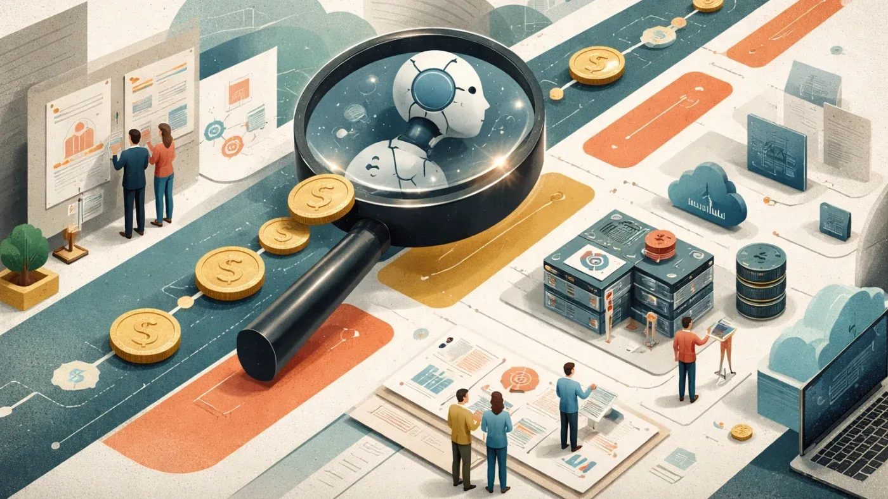
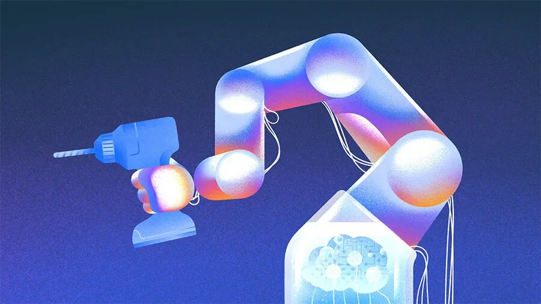
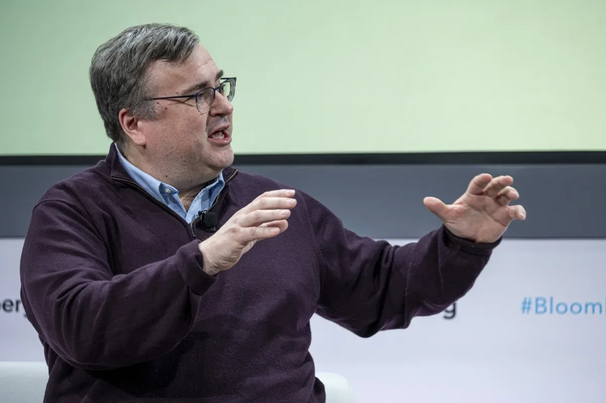

Инвестиции
Венчурные инвесторы спорят о пузыре ИИ: высокие оценки и инфляция ARR под прицелом
VCs оценили риски пузыря ИИ: что говорят Basis Set Ventures и M13
TechCrunch Venture
24 июн. 2026 г.Крупные раунды финансирования, M&A-сделки и движение венчурного капитала в AI-индустрии — куда течут деньги.
60 материалов
VCs оценили риски пузыря ИИ: что говорят Basis Set Ventures и M13

Menlo Ventures поднял $3 млрд благодаря ставке на Anthropic: доля в $14 млрд, SPV и фонд Anthology

Menlo Ventures собрала $3 млрд — крупнейший фонд за 50 лет. Почему ставка на Anthropic оказалась решающей?

Probook объединяет dispatch, клиентский сервис и планирование в одной ИИ-системе для ремонтных и сервисных компаний.

AppsFlyer привлёк $1 млрд: платформа для независимой атрибуции рекламы готова к IPO
Традиционный SaaS умирает: инвесторы переориентируются на ИИ-native-софт с оплатой за результат

Рекордные $18,8 млрд вложений в робототехнику за полгода — инвесторы переключились на воплощённый ИИ.

Европейский seed-инвестор собрал $320 млн на поддержку посевных стартапов и достиг $1 млрд под управлением

Кто получил $310 млн на симуляции реального мира — и ещё девять крупных раундов недели

Как ИИ меняет критерии оценки стартапов на seed-стадии — мнение главы AT&T Ventures

Как советы директоров могут предотвратить удар ИИ, когда бизнес кажется успешным — три принципа Итая Саги

Венчурный инвестор, нашедший Facebook, объясняет, почему ставка на ИИ-инфраструктуру не принесёт сверхдоходов.

Как чернокожие основатели становятся инвесторами, чтобы исправить дисбаланс в венчурном финансировании

Основатель продал ИИ-стартап без выручки. Вот почему инвесторы были неправы — и чему учит эта сделка

DeepSeek стал самым дорогим ИИ-стартапом Китая: $7,4 млрд раунд и оценка $50 млрд

Физик, потерявший отца из-за опоздавшего лекарства, построил ИИ-компанию почти на триллион долларов

SaaS не умер, но метрики, важные для инвесторов, изменились. Что нужно знать фаундерам.

ИИ-бум оказался американским: 88% инвестиций ушло в США

Испанский стартап Orbio привлёк $21 млн на ИИ-агентов для найма и управления персоналом

NinjaOne, TensorWave, Genspark и ещё семь стартапов: кто и сколько собрал за одну неделю

SpaceX вышла на биржу с рекордным IPO: $75 млрд привлечено, оценка $1,8 трлн

SpaceX, OpenAI, Anthropic выходят на биржу — но деньги достанутся не всем. Кому и почему

Base10 Partners закрыла два фонда на $850 млн для инвестиций в автоматизацию реальной экономики

VivaTech 2026 и TechCrunch запускают конкурс для стартапов в сфере корпоративного ИИ.

Jedify хочет стать слоем бизнес-контекста для ИИ-агентов: $24 млн и партнёрство со Snowflake.

Полупроводниковые стартапы продолжают привлекать миллиарды: $10,7 млрд инвестиций в 2026 году

29 единорогов за один месяц: кто получил миллиарды и почему ИИ-внедрение обогнало ИИ-разработку

Прямые продажи возвращаются в B2B-софт благодаря шести– и семизначным контрактам вертикальных ИИ-стартапов.

Рид Хоффман уходит из совета Microsoft ради стартапа по открытию лекарств Manus, привлекшего $50M.

Путин на ПМЭФ-2026: 30% роста e-commerce, стратегии ИИ и IT-суверенитет — что решили для цифровой экономики